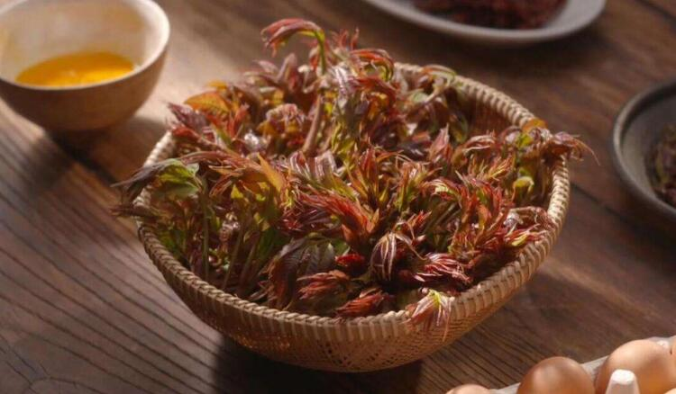

香椿浑身都是宝，但这些禁忌你真的知道吗？
香椿树在农村地区随处可见，或许你们称作它们为香棒头、香棒尖，每年春天香椿树刚发芽的时候就会被人们采摘食用，你可能只知道被称为“树上蔬菜”的它可以做成一道道美食，也有较高的药用价值，但在食用过程中的一些禁忌你真的知道吗？
香椿被人们称为“树上蔬菜”，每年，春回大地，万物复苏，香椿树开始发芽，其绿叶红边的外形，犹如玛瑙、翡翠一般让人赏心悦目，香味浓郁扑鼻，是宴会待客的上等佳肴，其营养之丰富远远胜于其他蔬菜。但香椿树芽的口感在谷雨之前为最佳，等谷雨之后，由于芽会纤维化，导致其口感不佳，并且其营养价值也会大大降低，所以说，采摘香椿也要把握时令，不要因为采摘时间不对而暴殄天物。
香椿的营养成分
中国美食闻名世界，“舌尖上的中国”也是让所有人垂涎三尺，我们国家也是世界上唯一一个将香椿的嫩叶入馔的国家，也就是将香椿做成食物的国家。在我国的河南、陕西、四川、安徽以及广阔的西北地区都有栽培香椿。其中安徽的太和香椿家喻户晓，最为著名。香椿为什么会这么受欢迎，它到底含有什么营养成分呢？我们可以从下面的表中寻找到答案。
营养素含量（每100克）热量（大卡）555.00碳水化合物（克）30.10脂肪（克）38.80蛋白质（克）23.60纤维素（克）2.2维生素A（微克）---维生素C（毫克）---镁（毫克）---钙（毫克）27.00铁（毫克）4.800锌（毫克）---钾（毫克）---磷（毫克）212.00。
从表中我们可以看出香椿含有丰富的蛋白质、脂防、碳水化合物、维生素、胡萝卜素、 铁、磷、钙等多种营养成分，简直就是大自然给予我们的天然的营养品，也是我们食用的食物中不可多得的珍品，其营养价值和药用价值更是不言而喻。
中华上下五千年历史，当然香椿也是有源可踪，香椿从汉代开始就在民间作为美食流传。
香椿的做法也更是五花八门，比如可以炒着吃、腌咸菜吃，也可以作为调味来使用，如小炒香椿芽、凉拌香椿芽、香椿芽拌冷面、香椿炒虾仁、香椿千层饼、炸香椿鱼等等，简直花样众多，让人口水直流。将香椿用开水略焯一下， 就会浓香四溢，再用来拌豆腐、炒菜等。
据《日华子本草》指出，香椿能”止泄精尿血、暖腰膝、除心腥痼冷、胸中痹冷、痃癖气及腹痛等，食之肥白人。中风失音研汁服；心脾胃痛甚，生研服，蛇犬咬并恶疮，捣敷”。
从这些流传下来的医术中的记载，我们可以看到，祖先早已发现了香椿的药用价值，其中医认为香椿苦、涩、平，有清热解毒、健胃理气、润肤明目、杀虫、涩血止痢、止崩等等的功效，因为香椿能燥湿清热可用于久泻久闲、得便血、崩漏带下等病症，其次香椿具有抗菌消炎、杀虫的作用，可用治疗疮癣等病;主治疮疡、脱发、肺热咳嗽等病症。
而在如今我国医学上也已经将香椿用于药物使用，临床表明，香椿能保肝、利防、健脾、补血、舒筋。可以将其捣烂外敷，对消浮肿毒也有较好疗效;民间人们用香椿煮水服用，用来治疗高烧头晕等病。这样看来普普通通的一种植物在医学界也有着举足轻重的地位。
而对于各种疾病的治疗，其治疗方法以及用量都是不同的。比如对于以下的疾病的治疗方法，都是需要我们了解并应用于生活中的。
1、脱发:香椿的芽以及心，洗净捣烂，涂擦脱发处，可促使头发重生。
2、疮痛肿青:香椿芽加等量大蒜及少许盐，一同捣烂外敷。
3、控制血糖:香椿芽12克，用清水煮后食用，或用沸水冲泡饮用,每日1剂，连用7天。
4、慢性痢疾:香椿树皮120克， 烙干研末，每次用开水送服9克每日服2次。
5、细菌性痢疾:香椿叶100克，水煎，早、晚分服，每口1剂。
当然以上介绍的治疗方法及用量只是科学建议，有相关症状的朋友还得到医院就诊，谨遵医嘱，得到医生认可和叮嘱才会有疗效，身体恢复的更加的理想。
再者，香椿对于老人孕妇可是有美容保健，“助孕素”的美称。
由于香椿中含有挥发性芳香族有机物，可健脾开胃，增加食欲，如果自己消化不良或者没有食欲都可以适量的食用。
再者它有着“助孕素”的美称，是因为它自身含有大量的维生素E和性激素物质，也有抗衰老和补阳滋阴的作用，对于爱美的姑娘以及老人都是很好的营养品。
香椿还具有清热利湿、利尿解毒的功效，是辅助治疗肠炎、泌尿系统感染的良药，有此类问题的朋友也可以适量的食用，加快身体的康复。
再者香椿含有丰富的维生素C、胡萝卜素等，有助于增强机体免疫功能，并有润滑肌肤的作用，是保健美容的良好食品。
而香椿子，即香植树的果实，有祛风散寒、止痛的功效。用于治疗外感风寒，胃痛，风湿关节疼痛，有理气止痛之效，给家里的老人储备一些是一个不错的建议。
那我们应该如何挑选香椿呢？
我们在香椿选购时应挑选短壮肥嫩、香味浓厚、无老枝叶、长度在10厘米以内为佳。而对于香椿的储存方法呢，如果你想长期保存，可以用开水略烫一下，用细盐搓一搓， 装在小塑料袋内入冰箱冷冻室内，随取随用，终年可食，可以说是非常方便了。
那些你不知道的香椿美食以及功效与禁忌
香椿可以做成各种美食又有这么多的药用价值，难道它真的百益而无一害吗？答案当然不是啦。据《食疗本草》记载“椿芽多食动风，熏十二经脉、五脏六腑，令人神昏血气微。若和猪肉、热面频食则中满，盖壅经络也”，故不可过量食之。”
从书中我们可以看出一般人群都可以食用香椿。人们吃香椿对身体没有明显的坏处，但在使用时一定记得用沸水焯烫，在者，香椿为发物，食易诱使痼疾复发，故慢性疾病患者应少食或不食。
合理的食用香椿给我们补充营养，促进代谢，开胃健脾，延缓衰老，清热利湿，等等，但错误的食用也会危及我们的生命健康，所以说，香椿是大自然馈赠于我们的贺礼，我们要正确的食用，让其效益百倍。

香椿虽然好吃，但我们必须注意，香椿必须焯烫后吃，因为每千克香椿芽中约含30克亚硝酸盐，越老含量越高，这么高的含量很容易引起亚硝酸盐中毒。而当你用开水烫后其含量约为每千克4毫克左右，大大降低了亚硝酸盐的含量，所以吃香椿要用开水烫过，这样口感极佳并食用安全，你知道了吗？
 上一篇
上一篇